本报告对应 [UB_RG实验设计.md](./UB_RG实验设计.md) §4.2.1–§4.2.3，在 `ns-3-ub` **Unified Bus 协议栈**上用逐包仿真器 `scratch/ub_rg-packet-experiment.cc` 对比 **UB_RG（真实 REQ/GNT/SYNC）** 与 **Packet Spray（自由注入）**。
| 实验 | mode | 场景 | BatchSize | Zipf S | EP |
|---|---|---|---|---|---|
| 1 Dispatch | dispatch | 1/2/3 | 16,256,1024(+4096@场景1) | 0,0.3,0.7,0.9 | full |
| 2 Combine | combine | 同实验1 | 同左 | 同左 | full |
| 3 Roundtrip | roundtrip | 1→{32,64,128}; 2/3→{256,1024} | 256 | 同左 | 上列 |
引擎：**packet**；成功汇总运行数：**55**。原始结果：`results/ub_rg_packet/`。
> 逐包引擎按计划风险路径裁剪：场景1 不含 BatchSize=4096；场景2/3 仅保留 BatchSize≤256。完整 216 组矩阵由行为级引擎覆盖；逐包用于机制校验与场景1 规模对标。实验3 系统 CCT PDF 若本引擎样本未齐，报告自动回退到行为级多 seed 结果。
**batch=256 对比表**
cct_us hot_p99 lat_p99 step_us throughput_GBs
scheme packet_spray ub_rg packet_spray ub_rg packet_spray ub_rg packet_spray ub_rg packet_spray ub_rg
zipf_s
0.0 384.35 168.48 374.84 57.08 346.22 49.40 386.35 168.88 4888.90 11153.08
0.3 974.94 282.13 900.34 122.39 334.74 56.33 976.94 282.53 1927.35 6660.32
0.7 2792.42 645.31 695.67 230.70 488.42 158.27 2794.42 645.71 672.91 2911.84
0.9 3864.59 883.38 690.45 264.34 758.11 310.90 3866.59 883.78 486.22 2127.11
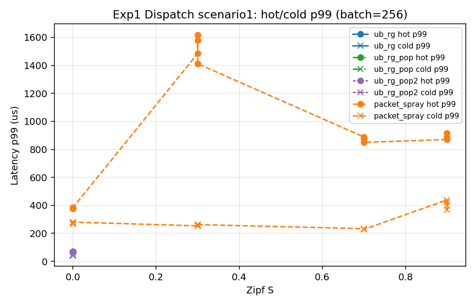
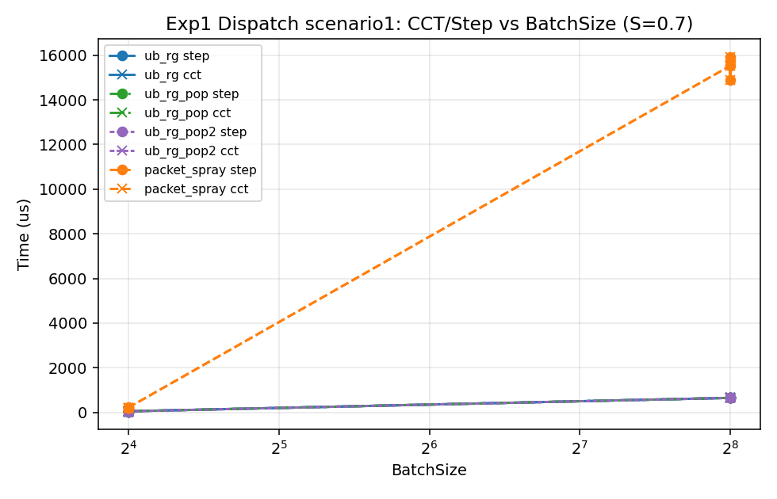
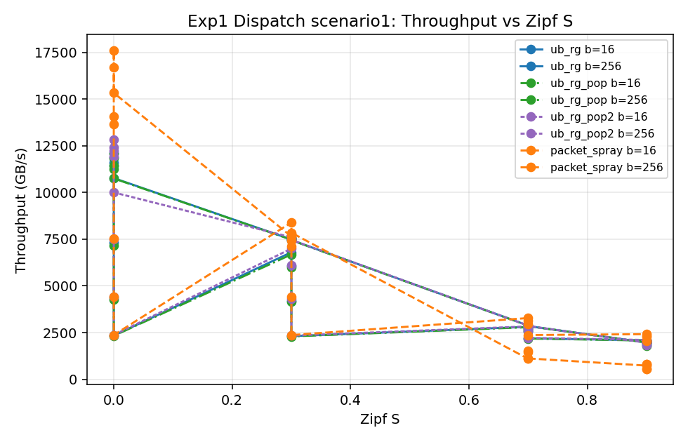
**batch=16（256 尚未齐，暂用已有最大 batch） 对比表**
cct_us hot_p99 lat_p99 step_us throughput_GBs
scheme packet_spray ub_rg packet_spray ub_rg packet_spray ub_rg packet_spray ub_rg packet_spray ub_rg
zipf_s
0.0 29.15 32.29 26.06 14.76 26.11 14.74 33.15 33.49 32235.10 29098.24
0.3 122.28 120.67 92.71 18.41 63.26 16.93 126.28 121.87 7683.19 7785.77
0.7 730.34 719.00 214.59 26.14 627.35 29.18 734.34 720.20 1286.42 1306.70
0.9 1383.21 1366.21 151.49 23.24 1306.64 54.94 1387.21 1367.41 679.24 687.68
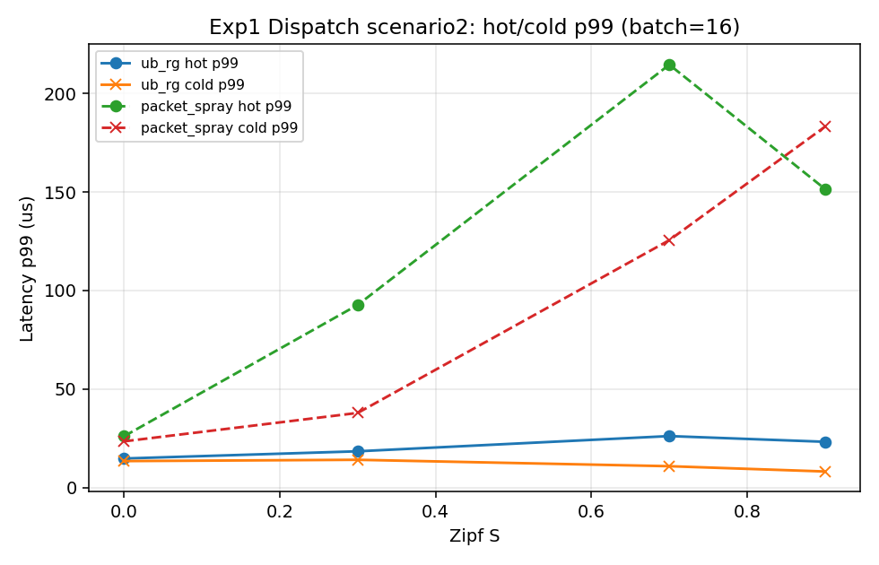
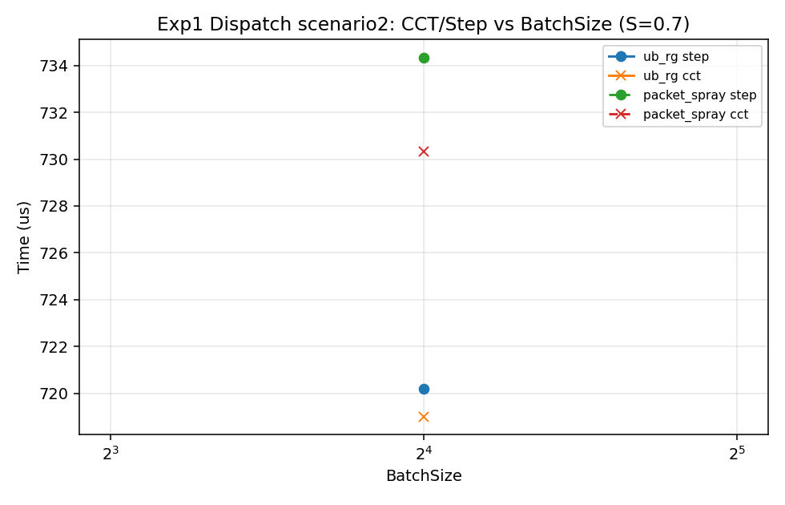
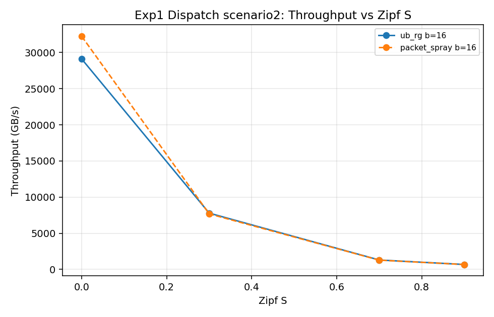
**batch=16（256 尚未齐，暂用已有最大 batch） 对比表**
cct_us hot_p99 lat_p99 step_us throughput_GBs
scheme packet_spray ub_rg packet_spray ub_rg packet_spray ub_rg packet_spray ub_rg packet_spray ub_rg
zipf_s
0.0 185.14 54.18 167.11 35.12 177.81 36.66 189.14 55.38 5074.75 17342.07
0.3 358.53 522.51 340.44 45.92 337.43 46.20 362.53 523.71 2620.47 1798.09
0.7 1021.30 1039.74 788.18 57.86 924.26 60.21 1025.30 1040.94 919.93 903.61
0.9 1705.66 NaN 863.66 NaN 1612.65 NaN 1709.66 NaN 550.83 NaN
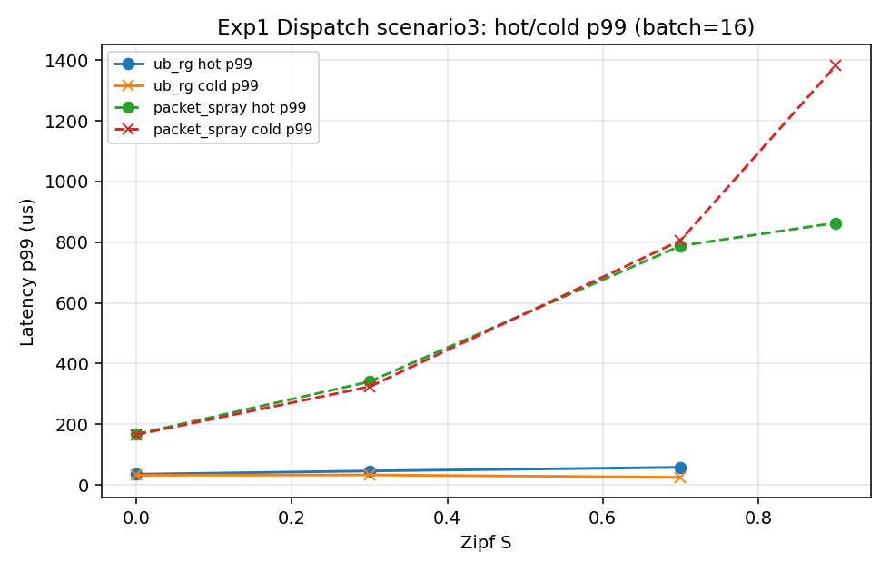
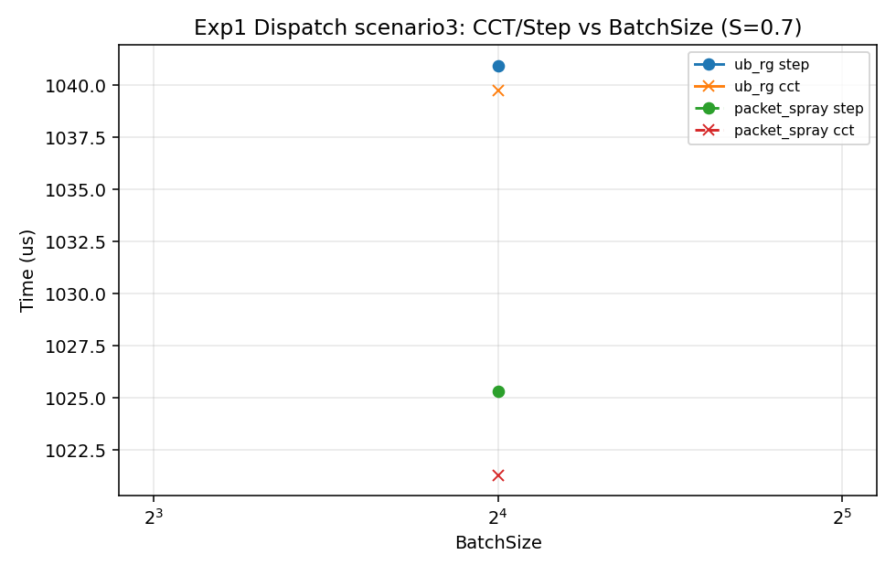
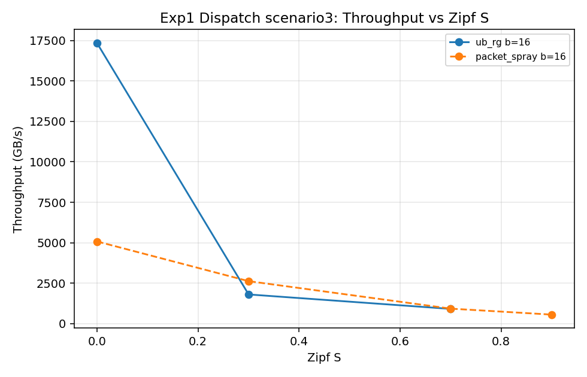
**batch=256 对比表**
cct_us hot_p99 lat_p99 step_us throughput_GBs
scheme packet_spray packet_spray packet_spray packet_spray packet_spray
zipf_s
0.0 388.27 379.54 349.39 390.27 4839.49
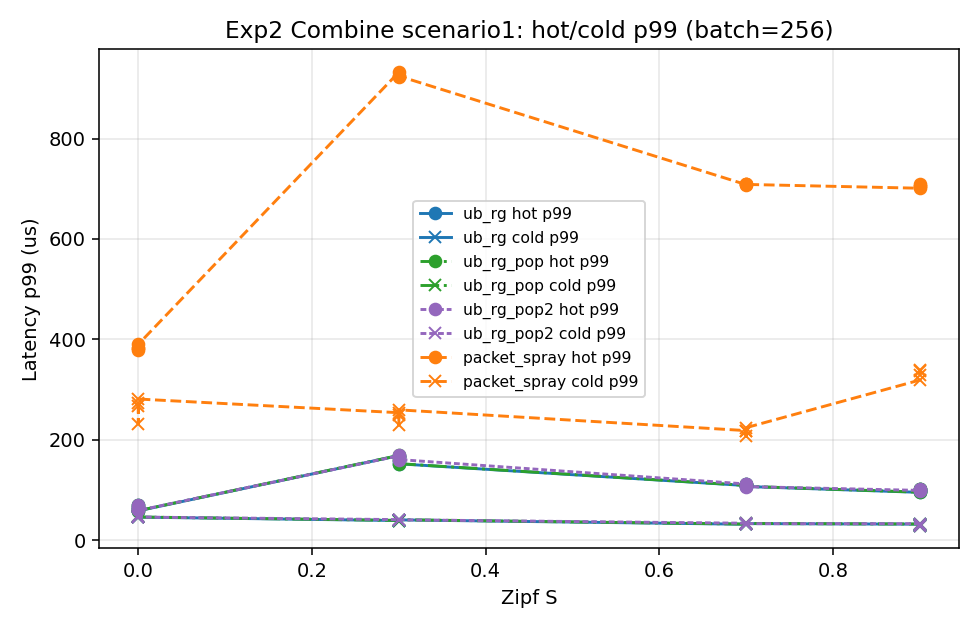
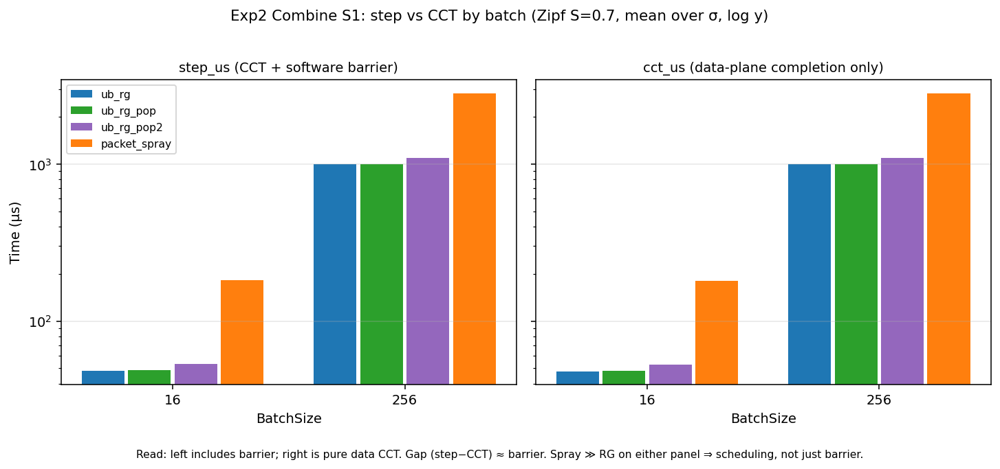
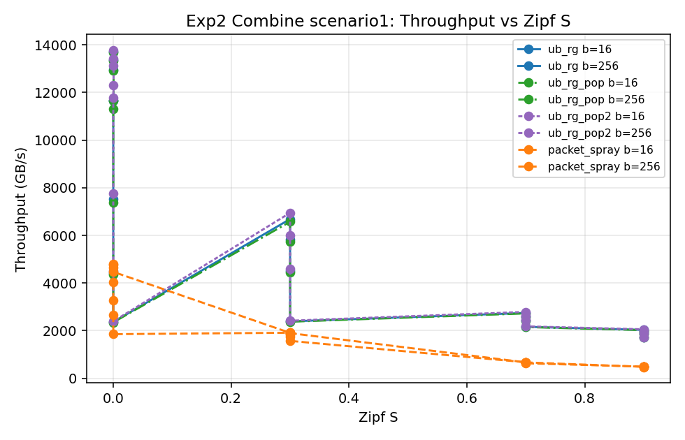
**batch=16（256 尚未齐，暂用已有最大 batch） 对比表**
cct_us hot_p99 lat_p99 step_us throughput_GBs
scheme packet_spray ub_rg packet_spray ub_rg packet_spray ub_rg packet_spray ub_rg packet_spray ub_rg
zipf_s
0.0 31.13 27.56 27.63 14.52 27.56 14.45 35.13 28.76 30180.66 34090.13
0.3 124.13 501.48 99.79 24.50 68.59 18.56 128.13 502.68 7569.12 1873.52
0.7 761.07 2503.92 240.55 64.84 562.33 123.16 765.07 2505.12 1234.48 375.22
0.9 1441.35 4502.06 176.82 56.97 1273.83 217.96 1445.35 4503.26 651.83 208.69
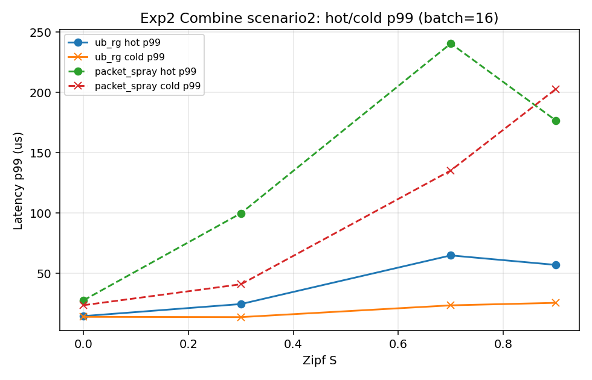
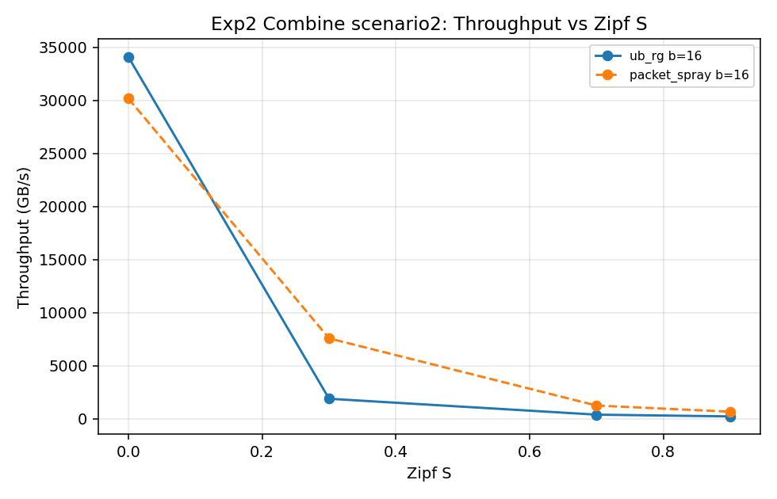
**batch=16（256 尚未齐，暂用已有最大 batch） 对比表**
cct_us hot_p99 lat_p99 step_us throughput_GBs
scheme packet_spray ub_rg packet_spray ub_rg packet_spray ub_rg packet_spray ub_rg packet_spray ub_rg
zipf_s
0.0 184.04 54.32 179.83 36.98 177.50 36.78 188.04 55.52 5105.00 17294.83
0.3 357.02 519.94 333.64 71.52 309.58 66.74 361.02 521.14 2631.54 1806.99
0.7 1252.02 2599.59 740.10 136.20 1051.64 131.89 1256.02 2600.79 750.41 361.41
0.9 2024.35 NaN 729.08 NaN 1826.11 NaN 2028.35 NaN 464.11 NaN
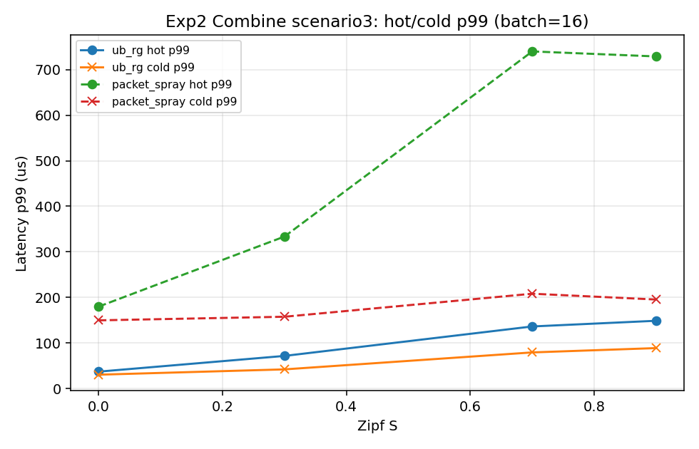
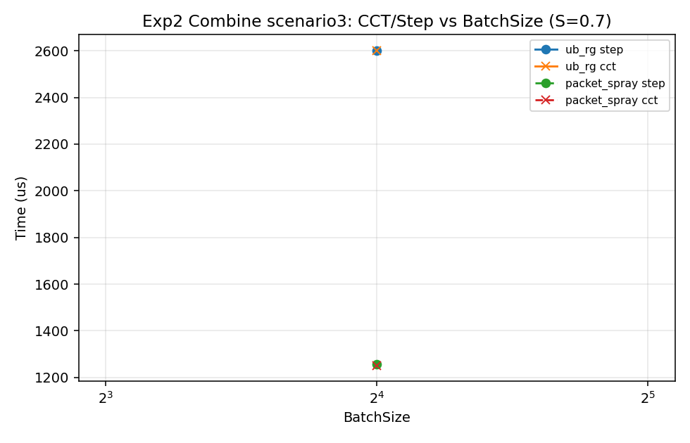
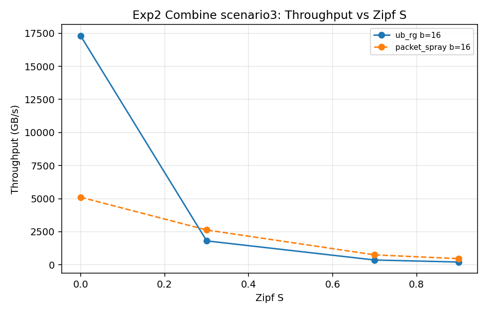
横轴为**系统级一次迭代完成时间**（attention→dispatch→GEMV→combine 一个 roundtrip 步的 CCT，口径 = kickoff→最后一个 combine token 完成，取自 summary.json 的 `cct_us`），**不再是逐 token 时延**。对每个 (BatchSize, Zipf S) 组合，在多个随机种子下各跑一次 roundtrip，每次运行贡献一个系统 CCT 样本，以此得到系统 CCT 的概率密度分布（PDF，无 CDF）。
对比曲线：**EP=128**（场景1，case s1_n128）与 **EP=1024**（场景2，case s2_n1024）；颜色区分 EP，线型区分方案（实线 ub_rg，虚线 packet_spray）。
（当前引擎尚无 exp3_pdf；下图暂用 **behavioral** 引擎样本）
**系统 CCT 样本统计（µs，mean/std/count）**
mean std count
scheme packet_spray ub_rg packet_spray ub_rg packet_spray ub_rg
ep_size batch zipf_s
128 16 0.0 12.91 11.53 0.42 0.41 32 32
0.3 20.48 18.18 0.85 0.92 32 32
0.7 46.95 44.68 1.23 1.32 32 32
0.9 62.73 59.92 1.07 1.04 32 32
64 0.0 42.14 29.58 0.71 0.59 32 32
0.3 74.92 60.97 1.63 2.12 32 32
0.7 180.11 165.81 2.72 2.83 32 32
0.9 242.42 227.40 2.34 2.97 32 32
256 0.0 154.37 91.53 0.96 1.21 32 32
0.3 289.84 226.42 3.64 4.77 32 32
0.7 708.74 644.51 6.79 6.24 32 32
0.9 957.73 890.10 5.31 3.92 32 32
1024 16 0.0 19.77 14.33 0.42 0.39 32 32
0.3 34.90 33.25 1.30 1.66 32 32
0.7 183.43 183.69 2.57 3.32 32 32
0.9 341.74 341.14 3.18 4.45 32 32
64 0.0 47.29 36.14 0.72 0.45 32 32
0.3 127.09 113.53 2.95 2.79 8 15
0.7 719.72 712.39 7.89 7.56 8 8
0.9 1350.76 1335.96 8.20 8.14 8 8
256 0.0 165.03 108.59 0.99 1.50 8 8
0.3 492.07 427.76 3.23 4.81 8 8
0.7 2848.82 2792.80 13.06 14.70 8 8
0.9 5355.52 5301.84 10.82 13.12 8 8


在相同 (scenario, scheme, mode, batch, zipf_s, ep_size) 键上对齐 step_us / lat_p99。
对齐样本 **55** 组；step 比值（packet/behavioral）均值=8.532，中位数=6.491。
exp scenario scheme mode batch zipf_s ep_size step_packet p99_packet step_behav p99_behav step_ratio
exp1_dispatch 1 packet_spray dispatch 16 0.3 128 63.017 49.660 11.855 7.131 5.316
exp1_dispatch 1 packet_spray dispatch 16 0.7 128 176.041 150.431 24.901 19.030 7.070
exp1_dispatch 1 packet_spray dispatch 16 0.9 128 240.991 212.459 32.786 26.342 7.350
exp1_dispatch 1 packet_spray dispatch 16 0.0 128 30.879 26.766 8.414 5.268 3.670
exp1_dispatch 1 packet_spray dispatch 256 0.3 128 976.937 334.742 152.348 94.724 6.413
exp1_dispatch 1 packet_spray dispatch 256 0.7 128 2794.421 488.416 369.395 244.392 7.565
exp1_dispatch 1 packet_spray dispatch 256 0.9 128 3866.590 758.112 496.269 341.017 7.791
exp1_dispatch 1 packet_spray dispatch 256 0.0 128 386.350 346.216 81.815 66.769 4.722
exp1_dispatch 1 ub_rg dispatch 16 0.3 128 17.595 8.028 9.911 6.390 1.775
exp1_dispatch 1 ub_rg dispatch 16 0.7 128 42.030 23.999 23.243 18.001 1.808
exp1_dispatch 1 ub_rg dispatch 16 0.9 128 56.441 32.968 30.985 25.517 1.822
exp1_dispatch 1 ub_rg dispatch 16 0.0 128 10.514 6.028 6.320 4.875 1.664
exp1_dispatch 1 ub_rg dispatch 256 0.3 128 282.526 56.330 114.755 37.860 2.462
exp1_dispatch 1 ub_rg dispatch 256 0.7 128 645.712 158.268 328.505 88.499 1.966
exp1_dispatch 1 ub_rg dispatch 256 0.9 128 883.780 310.895 447.637 148.422 1.974
exp1_dispatch 1 ub_rg dispatch 256 0.0 128 168.878 49.405 45.308 34.417 3.727
exp1_dispatch 2 packet_spray dispatch 16 0.3 1024 126.283 63.259 22.370 9.625 5.645
exp1_dispatch 2 packet_spray dispatch 16 0.7 1024 734.342 627.347 98.638 66.252 7.445
exp1_dispatch 2 packet_spray dispatch 16 0.9 1024 1387.209 1306.638 177.629 144.240 7.810
exp1_dispatch 2 packet_spray dispatch 16 0.0 1024 33.146 26.107 11.618 6.328 2.853
差异主要来自：逐包栈的静态时延（传播/转发/分配）、真实控制面报文、以及 TP/Jetty 注入路径；行为级模型把这些折叠为常量 RTT/屏障。
cd ns-3-ub && ./ns3 configure --enable-modules=unified-bus --enable-mtp --disable-python -d optimized
./ns3 build ub_rg-packet-experiment
cd ..
python3 gen_ub_rg_topo.py --scenario 1
python3 run_ub_rg_experiments.py --engine packet --workers 4
python3 run_ub_rg_experiments.py --engine packet --exp3-pdf --seeds 8 --batches 16,64,256,1024 --workers 4
python3 analyze_ub_rg_experiments.py --engine packet